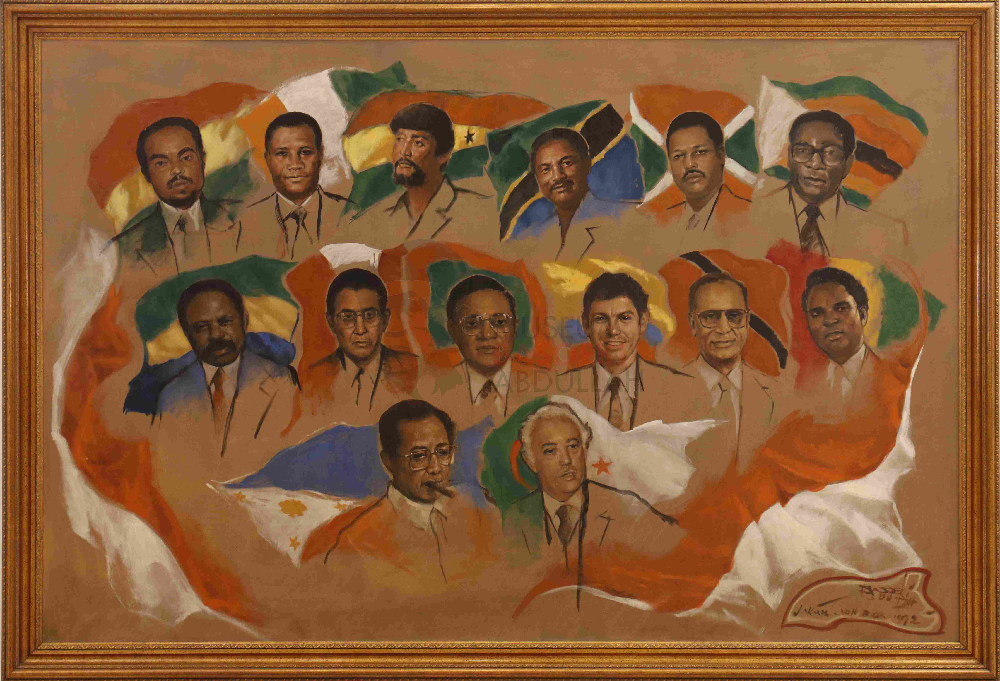

Beragam Koleksi Menarik

Lukisan Gerakan Non-Blok
Jelajahi lukisan yang mendeskripsikan gerakan non-blok
Pemandangan
Rasakan indahnya lukisan yang memberikan kenyamanan akan indahnya alam

Potret Wanita
Jelajahi beberapa artistik figur wanita yang memukau

Gatotkaca & Antasena
Pertarungan antar hubungan keluarga

Potret Diri
Eksplorasi karya seni figuran sang maestro itu sendiri
Abstraksi
Beragam lukisan abstrak yang melambangkan ekspresi yang bermacam-macam

Pahlawan
Jelajahi karya karya yang menggambarkan perjuangan Indonesia di masa penjajahan

Ramayana
Jelajahi karya tentang epos Ramayana yang terkenal

Soekarno
Presiden Pertama Republik Indonesia
Wahidin Sudirohusodo
Pencetus Organisasi Boedi Oetomo

Kakak & Adik
Kebersamaan antar saudara

Nyi Roro Kidul
Penjaga pantai selatan yang sangatlah melegenda